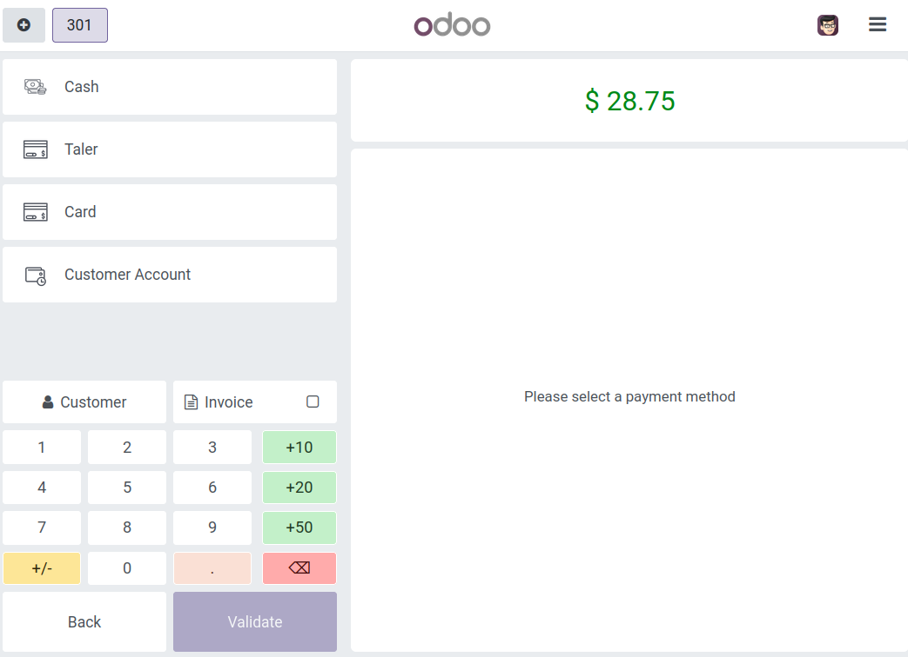
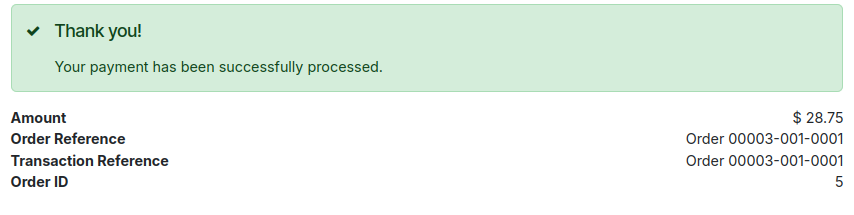
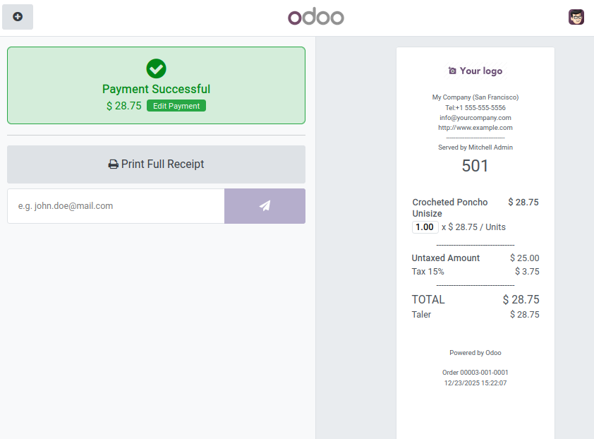

Point of Sale¶
Configure Taler payment for point of sale¶
Allowing Taler payment on the point-of-sale app requires a few more steps than regular online payments.
Preliminary steps:
Have previously setup Taler as a payment provider.
Install the
Point of saleOdoo app.
Create the Point of Sale payment method:
On the top bar, press
Configuration -> Payment Methods.Create a new Payment Method.
Name it
Taler(You can call it something else, butTaleris easier to keep track of).Check the
Online Paymentcheckbox.Select
Talerin theAllowed Providersfield.
Add Taler to the point of sale:
Make sure that the point of sale register is closed for this step.
On the top bar, press
Configuration -> Point of Sales, you will be redirected to the point of sale list.Select the point of sale you’d like to add Taler payment to.
Click on
More settings: Configurations > Settings, which will lead you to the point of sale’s settings page.Alternatively, you can access this page by going to Settings through the app switcher (top-left button), then going to
Point of Salesection, and selecting the point of sale that you would like to modify.
In
Payment -> Payment Methods, add the payment method you just created (generallyTaler).
The setup is now complete, and you can select this new payment provider when a customer pay for an order on the Point of sale that you added the payment method to.
Pay using Taler at a Point of Sale¶
Open a register on one of the Points of Sale for which you have activated the Taler payment method.
Add any items to the order and click
Paymentat the bottom of the page.Select the payment method
Talerpayment method.
{kind=link}

Click
Validate, it will show a QR Code.Scanning this QR Code will redirect to an Odoo page, where the customer will be able to pay with Taler.
This will bring the customer to a Taler order page, and they will be able to pay using their Taler wallet or web browser.
Upon payment completion, the customer will be redirected to Odoo, with a confirmation of payment.
{kind=link}

The point of sale’s side will show a successful payment, and produce a receipt.
{kind=link}
